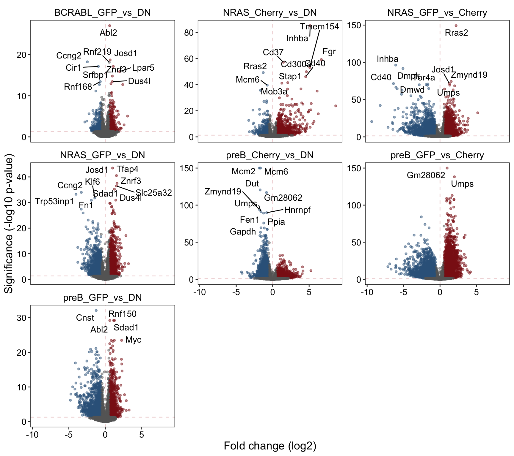

STAT5 project - Kohei Kume
2021-03-05
Section1 BCL6/MYC DE
1.1 Background
To characterise the transcriptional programs driven by MYC and BCL6 in B-cells, a dual reporter system was established with GFP-Myc and mCherry-BCL6 in normal mouse pre-B cultured in Il7, and pre-B trasnformed by either BCR-ABL1 or NRAS G12D.
Note: no mCherry+ population is observed in the BCR-ABL1 condition due to BA driving Myc program & thereby repressing Bcl6.
1.2 Setup
1.3 Sample Info
library(DT)
files <- list.files("../processed_data/RNAseq/BCL6_MYC_salmon", pattern = "quant.sf",
recursive = T, full.names = T)
pattern <- "^.+/XLR[0-9]+_(([A-Za-z]+)_([A-Za-z]+)_(rep[0-9]+))/quant.sf$"
smi <- data.frame(sample_id = sub(pattern, "\\1",files),
condition = sub(pattern, "\\2_\\3",files),
replicate = sub(pattern, "\\4",files),
path = files)
smi %>% arrange(sample_id) %>%
DT::datatable(escape = F, rownames = F,
colnames = c("Sample ID", "Condition", "Replicate", "File Path"),
options = list(
columnDefs = list(list(
targets = 3,
render = JS(
"function(data, type, row, meta) {",
"return type === 'display' && data.length > 35 ?",
"'<span title=\"' + data + '\">' + data.substr(0, 35) + '...</span>' : data;",
"}")))
), callback = JS('table.page(3).draw(false);'))1.4 DE
1.5 Differential Expression
contrasts <- list(preB_GFP_vs_DN = "preB_GFPpos_vs_preB_DN",
preB_Cherry_vs_DN = "preB_Cherrypos_vs_preB_DN",
preB_GFP_vs_Cherry = "preB_GFPpos_vs_preB_Cherrypos",
NRAS_GFP_vs_DN = "Nras_GFPpos_vs_Nras_DN",
NRAS_Cherry_vs_DN = "Nras_Cherrypos_vs_Nras_DN",
NRAS_GFP_vs_Cherry = "Nras_GFPpos_vs_Nras_Cherrypos",
BCRABL_GFP_vs_DN = "BA_GFPpos_vs_BA_DN")
deres <- lapply(contrasts, function(contrast) {
a <- sub("^(.+)_vs_(.+)$", "\\1", contrast)
b <- sub("^(.+)_vs_(.+)$", "\\2", contrast)
res <- results(dds, contrast=c("condition", a, b))
lfcShrink(dds, contrast = c("condition", a, b),
res = res, type = "normal")
})1.6 Annotate and tidy
library(openxlsx)
rlog <- rlog(dds)
genesymb <- mapIds(txdb, keys = rownames(deres[[1]]),
keytype = "GENEID", column = "SYMBOL")
wb <- createWorkbook()
deanno <- lapply(names(contrasts), function(contrast) {
resdf <- as.data.frame(deres[[contrast]])
resdf[resdf$lfcSE > 1, 5:6]
a <- sub("^(.+)_vs_(.+)$", "\\1", contrasts[[contrast]])
b <- sub("^(.+)_vs_(.+)$", "\\2", contrasts[[contrast]])
resdf <- cbind(resdf, assay(rlog)[, c(grep(b, colnames(rlog)),
grep(a, colnames(rlog)))])
resdf$gene_symbol <- genesymb
resdf$ensembl_id <- rownames(resdf)
resdf$baseMean <- log2(resdf$baseMean)
resdf[,paste0("av_", b)] <- rowMeans(assay(rlog)[, grep(b, colnames(rlog))])
resdf[,paste0("av_", a)] <- rowMeans(assay(rlog)[, grep(a, colnames(rlog))])
resdf <- resdf[order(resdf$pvalue), c(13:14,2,6,3,1,15:16,7:12)]
colnames(resdf)[3:6] <- c("L2FC","qval","L2FC_SE","av_expr")
addWorksheet(wb, sheetName = contrast)
writeData(wb, resdf, sheet = contrast, rowNames = F)
freezePane(wb, sheet = contrast, firstRow = TRUE, firstCol = TRUE)
return(resdf)
})
names(deanno) <- names(contrasts)
saveWorkbook(wb, "../results/BCL6_MYC_DE.2020-03-11.xlsx", overwrite = T)
saveRDS(deanno, "../processed_data/RNAseq/BCL6_MYC_DE.2020-03-11.rds")dds <- readRDS("../processed_data/RNAseq/BCL6_MYC_dds.2020-03-11.rds")
deanno <- readRDS("../processed_data/RNAseq/BCL6_MYC_DE.2020-03-11.rds")
lapply(names(deanno), function(x) {
y <- as.data.frame(deanno[[x]]) %>% dplyr::filter(qval < 0.05)
data.frame(condition = x,
upreg = y %>% dplyr::filter(L2FC > 1) %>% nrow(),
dnreg = y %>% dplyr::filter(L2FC < -1) %>% nrow())
}) %>% bind_rows() %>% kableExtra::kable()| condition | upreg | dnreg |
|---|---|---|
| preB_GFP_vs_DN | 324 | 870 |
| preB_Cherry_vs_DN | 994 | 812 |
| preB_GFP_vs_Cherry | 1571 | 2250 |
| NRAS_GFP_vs_DN | 392 | 849 |
| NRAS_Cherry_vs_DN | 593 | 201 |
| NRAS_GFP_vs_Cherry | 964 | 1809 |
| BCRABL_GFP_vs_DN | 94 | 116 |
Download the full differential expression results in excel format.
1.7 Volano plot
goi <- c("Egr1", "Dusp6", "Cish", "Hk1", "Hk2")
plotdat <- lapply(names(deanno), function(comp) {
x <- deanno[[comp]]
x$col <- "B"
x[which(x$qval < 0.05 & x$L2FC > 0.58),]$col <- "A"
x[which(x$qval < 0.05 & x$L2FC < -0.58),]$col <- "C"
if (any(x$qval < 1e-150, na.rm = T)) x[which(x$qval<1e-150),]$qval <- 1e-150
topg <- top_n(x, 10, -qval)$gene_symbol
x$label <- ifelse(x$gene_symbol %in% c(topg, goi) & x$qval < 1e-03,
x$gene_symbol, "")
x$comparison <- comp
return(x[,c(1:6,15:17)])
}) %>% bind_rows()
(p <- ggplot(plotdat, aes(x = L2FC, y = -log10(qval))) +
geom_hline(yintercept = -log10(0.05), color = "firebrick", alpha = .2, lty=2) +
geom_vline(xintercept = 0, color = "firebrick", alpha = .2, lty=2) +
geom_point(aes(col=col), alpha = .5, size=1) +
ggrepel::geom_text_repel(aes(label = label)) +
facet_wrap(~comparison, nrow = 3, scales = "free_y") +
scale_color_manual(values = c("firebrick4","grey40","steelblue4")) +
scale_x_continuous(name = "Fold change (log2)") +
scale_y_continuous(name = "Significance (-log10 p-value)") +
theme(text = element_text(size = 14, color = "black", family = "Arial"),
axis.text = element_text(size = 11, color = "black", family = "Arial"),
panel.grid = element_blank(),
panel.background = element_blank(),
panel.border = element_rect(color = "black", fill = NA),
strip.background = element_blank(),
strip.text = element_text(size = 12, color = "black", family = "Arial"),
legend.position = "none"))
1.8 Session info
## R version 4.0.3 (2020-10-10)
## Platform: x86_64-apple-darwin17.0 (64-bit)
## Running under: macOS Catalina 10.15.7
##
## Matrix products: default
## BLAS: /Library/Frameworks/R.framework/Versions/4.0/Resources/lib/libRblas.dylib
## LAPACK: /Library/Frameworks/R.framework/Versions/4.0/Resources/lib/libRlapack.dylib
##
## locale:
## [1] en_US.UTF-8/en_US.UTF-8/en_US.UTF-8/C/en_US.UTF-8/en_US.UTF-8
##
## attached base packages:
## [1] parallel stats4 stats graphics grDevices utils datasets
## [8] methods base
##
## other attached packages:
## [1] DT_0.17 EnsDb.Mmusculus.v79_2.99.0
## [3] ensembldb_2.14.0 AnnotationFilter_1.14.0
## [5] GenomicFeatures_1.42.1 AnnotationDbi_1.52.0
## [7] DESeq2_1.30.1 SummarizedExperiment_1.20.0
## [9] Biobase_2.50.0 MatrixGenerics_1.2.1
## [11] matrixStats_0.58.0 GenomicRanges_1.42.0
## [13] GenomeInfoDb_1.26.2 IRanges_2.24.1
## [15] S4Vectors_0.28.1 BiocGenerics_0.36.0
## [17] tximport_1.18.0 forcats_0.5.1
## [19] stringr_1.4.0 dplyr_1.0.4
## [21] purrr_0.3.4 readr_1.4.0
## [23] tidyr_1.1.3 tibble_3.1.0
## [25] ggplot2_3.3.3 tidyverse_1.3.0
##
## loaded via a namespace (and not attached):
## [1] colorspace_2.0-0 ellipsis_0.3.1 XVector_0.30.0
## [4] fs_1.5.0 rstudioapi_0.13 farver_2.1.0
## [7] ggrepel_0.9.1 bit64_4.0.5 fansi_0.4.2
## [10] lubridate_1.7.10 xml2_1.3.2 splines_4.0.3
## [13] cachem_1.0.4 geneplotter_1.68.0 knitr_1.31
## [16] jsonlite_1.7.2 Rsamtools_2.6.0 broom_0.7.5
## [19] annotate_1.68.0 dbplyr_2.1.0 compiler_4.0.3
## [22] httr_1.4.2 backports_1.2.1 lazyeval_0.2.2
## [25] assertthat_0.2.1 Matrix_1.3-2 fastmap_1.1.0
## [28] cli_2.3.1 htmltools_0.5.1.1 prettyunits_1.1.1
## [31] tools_4.0.3 gtable_0.3.0 glue_1.4.2
## [34] GenomeInfoDbData_1.2.4 rappdirs_0.3.3 Rcpp_1.0.6
## [37] cellranger_1.1.0 jquerylib_0.1.3 vctrs_0.3.6
## [40] Biostrings_2.58.0 svglite_2.0.0 rtracklayer_1.50.0
## [43] crosstalk_1.1.1 xfun_0.21 rvest_0.3.6
## [46] lifecycle_1.0.0 XML_3.99-0.5 zlibbioc_1.36.0
## [49] scales_1.1.1 ProtGenerics_1.22.0 hms_1.0.0
## [52] RColorBrewer_1.1-2 yaml_2.2.1 curl_4.3
## [55] memoise_2.0.0 sass_0.3.1 biomaRt_2.46.3
## [58] stringi_1.5.3 RSQLite_2.2.3 highr_0.8
## [61] genefilter_1.72.1 BiocParallel_1.24.1 systemfonts_1.0.1
## [64] rlang_0.4.10 pkgconfig_2.0.3 bitops_1.0-6
## [67] evaluate_0.14 lattice_0.20-41 labeling_0.4.2
## [70] htmlwidgets_1.5.3 GenomicAlignments_1.26.0 bit_4.0.4
## [73] tidyselect_1.1.0 magrittr_2.0.1 bookdown_0.21
## [76] R6_2.5.0 generics_0.1.0 DelayedArray_0.16.2
## [79] DBI_1.1.1 pillar_1.5.0 haven_2.3.1
## [82] withr_2.4.1 survival_3.2-7 RCurl_1.98-1.2
## [85] modelr_0.1.8 crayon_1.4.1 utf8_1.1.4
## [88] BiocFileCache_1.14.0 rmarkdown_2.7 progress_1.2.2
## [91] locfit_1.5-9.4 grid_4.0.3 readxl_1.3.1
## [94] blob_1.2.1 webshot_0.5.2 reprex_1.0.0
## [97] digest_0.6.27 xtable_1.8-4 openssl_1.4.3
## [100] munsell_0.5.0 viridisLite_0.3.0 kableExtra_1.3.4
## [103] bslib_0.2.4 askpass_1.1